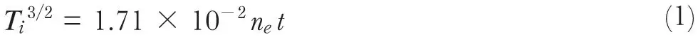
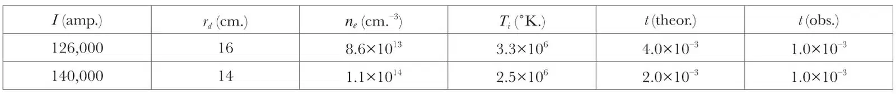

中文
中文L. Spitzer, jun.
Editor’s Note
The new experiments producing high-temperature plasmas in the ZETA device at Harwell not only shed light on the potential for controlled fusion energy, but also provided an opportunity for studying plasma physics in extreme conditions. Here physicist Lyman Spitzer reports on a mystery evident in the ZETA data: an anomalously fast rise in the temperature of positive ions, which in theory should gain energy more slowly through collisions with hot electrons. These findings indicated that physicists still had much to learn about the rich dynamics within plasmas, and the many collective instabilities which drive it. This theme of the overwhelming collective complexity of dynamical behaviour would be a common one in plasma physics for the next half century. 中文
THE interesting results described by Thonemann and his co-workers in the preceding article provide not only an important step forward in the controlled release of thermonuclear energy, but also a challenging problem in the dynamics of fully ionized gases or plasmas. The spectroscopic line profiles and the neutron counts provide incontrovertible evidence for the acceleration of the positive ions. However, theory would seem to indicate that electron-ion collisions are inadequate to explain the observed rate of heating, and some unknown mechanism would appear to be involved. 中文
The rate at which the positive-ion temperature increases, as a result of electron-ion collisions, has been given elsewhere1. It has been suggested, both in Great Britain and in the United States, that this process might be inadequate to explain the rate at which positive ions gain energy in certain electrical discharges. A relatively simple procedure, due to Stix2, may be used to set an upper limit to the rate at which positive ions are heated by electron-ion collisions. In this method the rate of heating is made a maximum by setting the electron temperature equal to three times the ion temperature, Ti, and setting the electron density equal to a constant, ne, corresponding to complete ionization and concentration within the discharge channel of all the gas initially present in the tube. On this basis (with lnΛ set equal to 15, see ref. 1) Ti is given by the relation

where Ti is in degrees K., ne in electrons per cm.3, and t in seconds. 中文
To determine the density in the ZETA experiments, we compute the radius, rd, of the discharge channel on the assumption that the flux of the axial magnetic field, Bz, is held constant in the gas during the contraction, and that the field, Bθ, due to the current equals the compressed axial field at the boundary of the discharge. As a result of the high temperatures achieved in ZETA, appreciable leakage of axial flux out of the discharge does not appear to be possible. Neglect of the finite gas pressure decreases the computed channel radius, increases ne and again makes the rate of increase of Ti a maximum. On these assumptions, values of rd have been computed for two currents, and an initial Bz of 160 gauss, and are listed in the second column of Table 1. 中文
Table 1

These values of rd are consistent with those cited by the Harwell group. The values of ne in the third column correspond to complete ionization of all the deuterium initially present in the torus, at a pressure of 1/8μ, and its concentration in the current channel. The value of Ti for the lower current in column 4 is taken from Table 1 in the article by Thonemann et al., and is based on the neutron yield. The value of Ti at the higher current is the temperature obtained from the Doppler width of the O V triplet, as shown in Fig. 6 of the Harwell article. The ion temperature obtained from the neutron yield under this condition is about 50 percent greater, but no information is available on the time at which the neutrons appear in this case. In the fifth column are given the values of the time, in seconds, required for the positive ions to reach this temperature, computed from equation 1. 中文
For comparison, the final column lists the observed times, in seconds, at which the positive-ion energies reach the values corresponding to the fourth column. For the lesser current, this is the time at which the neutron yield reaches half its peak value as shown in Fig. 4 of the paper from Harwell. For the greater value of current, t (obs.) is set equal to the time at which the O V radiation reaches its peak intensity, as shown in Fig. 5 of the Harwell paper. The simplifications made have tended to reduce t (theor.), and the correct value may be about an order of magnitude greater than given in Table 1. Thus the discrepancy seems real. There does not appear to be any simple model, based on a quiescent plasma, which is consistent with the observed rapid heating of the positive ions. 中文
Following a suggestion by the Harwell group as to the importance of non-thermal heating processes, Stix2 in 1956 arrived at conclusions similar to the above from experimental results obtained at Project Matterhorn. A discharge was produced in helium gas in a stainless-steel race-track tube of 10 cm. diameter and 240 cm. axial length, with an initial pressure of 0.63μ and an externally produced axial field of 19,000 gauss. The magnetic field was arranged so that intersection of the outer lines of force with material walls restricted the discharge to a channel of 5 cm. diameter. A loop voltage of 300 V. was applied around an iron transformer threading the race-track, and a maximum current of 8,000 amp. observed; since this current produces only a minor perturbation in the magnetic field, there was no pinching of the discharge. Time-resolved spectroscopic profiles of the He II line, λ 4,686, indicated that the kinetic temperature of these ions increased to 1.2×106 degrees K. in 1.5×10–4 sec., as compared to a theoretical maximum value of 0.8×106 degrees in this same time-interval. 中文
It has been known since the work by Langmuir3 that electrons in a conventional gas discharge approach a Maxwellian distribution much more rapidly than can be explained by inter-particle collisions. Recent research by Gabor and his collaborators4 has shown that oscillations generated in the plasma sheath are responsible for much of this effect, but the detailed mechanism is still unexplained. Possibly the high ion energies observed in ZETA represent a phenomenon related to Langmuir’s paradox. To analyse the possible processes involved, such as oscillations, shocks, hydromagnetic turbulences, etc., it would be helpful to obtain information on the extent to which the positive-ion velocities are thermalized, that is, on how nearly the distribution function is isotropic and Maxwellian. Evidently detailed experimental investigations of these cooperative effects in hot plasmas will be of great interest in basic physics. 中文
(181, 221-222; 1958)
Lyman Spitzer: Princeton University.
References:
1. Spitzer, L., “Physics of Fully Ionized Gases” (Interscience Publishers, 1956, Section 5.3).
2. Stix, T., Talk at Berkeley, California (February 20-23, 1957).
3. Langmuir, I., Phys. Rev., 26, 585 (1925); Z, Phys., 46, 271 (1928).
4. Gabor, D., Ash, E. A., and Dracott, D., Nature, 176, 916 (1955).